청소년상담사-3급(1교시) (2018-10-06 기출문제)
1과목: 발달심리
1. 발달에 관한 설명으로 옳은 것을 모두 고른 것은?
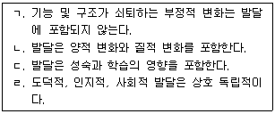
- ㄱ, ㄴ
- ㄱ, ㄷ
- ㄴ, ㄷ
- ㄴ, ㄹ
- ㄷ, ㄹ
(정답률: 82%)

2. 발달연구에 관한 설명으로 옳지 않은 것은?
- 종단적 연구는 횡단적 연구보다 시간과 비용이 많이 든다.
- 실험 참가자들이 받게 되는 각기 다른 실험처치 변인은 종속변인이다.
- 단기종단연구에서는 반복된 검사의 결과로 연습효과가 발생할 수 있다.
- 실험설계에서 통제집단은 실험처치를 받지 않는다.
- 상관관계로 인과관계를 결정할 수 없다.
(정답률: 53%)
3. 다음의 특징을 나타내는 발달 개념은?
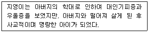
- 가소성(plasticity)
- 가역성(reversibility)
- 탈중심화(decentration)
- 특수화(specification)
- 평형화(equilibration)
(정답률: 67%)
4. 청소년기 자아정체감에 관한 설명으로 옳은 것은?
- 에릭슨(E. Erikson)은 자아정체감을 위기(crisis)와 전념(commitment)에 따라 네 가지 지위로 구분하였다.
- 정체성 혼미(diffusion)와 정체성 유실(foreclosure)은 정체성 위기를 경험하고 있는 지위이다.
- 정체성 유실이 정체감 발달에서 가장 미숙한 수준의 지위이다.
- 자아정체감은 청소년 중기에 대부분 완벽하게 확립된다.
- 정체성 형성(achievement)과 정체성 유예(moratorium)는 심리적으로 건강한 지위이다.
(정답률: 55%)
5. 애착에 관한 설명으로 옳지 않은 것은?
- 애착의 대상이 어머니에 국한된 것은 아니다.
- 회피애착과 저항애착은 모두 불안정한 애착이다.
- 비사회적 애착 단계의 아동은 일차 애착대상 뿐만아니라 다른 사람과도 애착을 형성한다.
- 안정애착 아동은 사회적 기술이 우수한 편이다.
- 회피애착 아동은 주양육자와 분리될 때 저항이 거의 없다.
(정답률: 72%)
6. 피아제(J. Piaget)의 인지발달이론에 관한 설명으로 옳은 것을 모두 고른 것은?
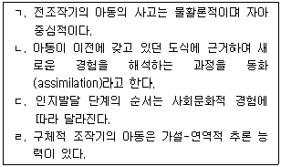
- ㄱ, ㄴ
- ㄱ, ㄷ
- ㄴ, ㄷ
- ㄴ, ㄹ
- ㄷ, ㄹ
(정답률: 51%)
7. 다음의 사례에 해당하는 인지발달의 개념으로 옳은 것은?
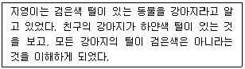
- 인지적 서열화
- 이중 표상
- 지연 모방
- 조절
- 확장된 자기
(정답률: 66%)
8. 비고츠키(L. Vygotsky)의 인지발달이론에 관한 설명으로 옳지 않은 것은?
- 근접발달영역이란 혼자서 성취하기는 어렵지만 유능한 타인의 도움으로 성취 가능한 것의 범위이다.
- 인지발달을 촉진하는 방법에는 발판화(scaffolding)와 수평적 격차가 있다.
- 아동의 혼잣말은 문제해결능력을 조절하는 인지적 자기 안내 체계이다.
- 지식은 사회적 상호작용을 통해 내면화 된다.
- 인지발달에 미치는 사회문화적 영향을 강조한다.
(정답률: 59%)
9. 다음에 해당하는 성염색체 이상 증후군은?
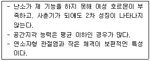
- 터너 증후군
- 클라인펠터 증후군
- XYY 증후군
- 삼중 X 증후군
- 다운 증후군
(정답률: 57%)
10. 태내 발달에 관한 설명으로 옳은 것을 모두 고른 것은?
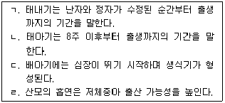
- ㄱ, ㄴ
- ㄴ, ㄷ
- ㄱ, ㄴ, ㄷ
- ㄴ, ㄷ, ㄹ
- ㄱ, ㄴ, ㄷ, ㄹ
(정답률: 53%)
11. 생후 1개월이내 신생아의 감각발달에 관한 설명으로 옳지 않은 것은?
- 시신경과 망막이 완전히 성숙하지는 않다.
- 엄마와 다른 여성의 젖 냄새를 구분한다.
- 촉각을 이용해서 주위 물체를 구분한다.
- 단순한 소리의 크기와 음조를 구분한다.
- 쓴맛, 단맛, 신맛을 구별한다.
(정답률: 51%)
12. 운동발달에 관한 설명으로 옳은 것을 모두 고른 것은?
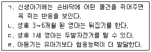
- ㄱ
- ㄹ
- ㄴ, ㄷ
- ㄷ, ㄹ
- ㄱ, ㄴ, ㄹ
(정답률: 78%)
13. 다른 유아가 노는 것을 관찰하면서 말을 하거나 제안을 하지만, 자신이 직접 놀이에 참여하지 않는 놀이유형은?
- 방관자적 놀이
- 몰입되지 않은 놀이
- 혼자 놀이
- 협동 놀이
- 연합 놀이
(정답률: 76%)
14. 피아제(J. Piaget)의 감각운동기에서 다음 사례에 해당되는 하위단계는?
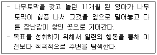
- 1차 순환반응단계
- 2차 순환반응단계
- 2차 순환반응의 협응단계
- 3차 순환반응단계
- 심적 표상단계
(정답률: 53%)
15. 다음에 해당하는 언어의 구성 지식은?
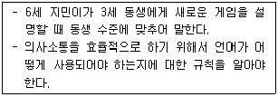
- 형태론적 지식
- 화용론적 지식
- 구문론적 지식
- 의미론적 지식
- 음운론적 지식
(정답률: 61%)
16. 지능에 관한 설명으로 옳지 않은 것은?
- 유동성 지능은 결정성 지능보다 중추신경계의 기능에 더 의존한다.
- 유동성 지능에는 공간지각능력이 포함된다.
- 결정성 지능에는 언어이해력이 포함된다.
- 유동성 지능은 생활 경험과 교육을 통해 축적된 지식이다.
- 결정성 지능과 유동성 지능이 절정에 달하는 시기는 각기 다르다.
(정답률: 64%)
17. 다음에서 설명하는 노화의 생물학적 이론은?
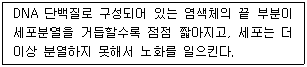
- 세포돌연변이 이론
- 텔로미어 이론
- 면역체계 이론
- 신경내분비 이론
- 교차결합 이론
(정답률: 72%)
18. 발달 이론가의 주장으로 옳은 것은?
- 미드(M. Mead): 청년기 발달은 주로 개인차에 영향을 받는다.
- 해비거스트(R. Havighurst): 청소년기를 질풍노도의 시기라고 하였다.
- 안나 프로이트(A. Freud): 청년기에 두드러지게 나타나는 방어기제는 금욕주의와 지성화이다.
- 마샤(J. Marcia): 23세부터 28세 사이에 자아정체감이 형성된다.
- 길리건(C. Gilligan): 여성의 도덕심을 구성하는 핵심개념은 정의(justice)이다.
(정답률: 54%)
19. 정신질환의 진단 및 통계 편람(DSM-5)에서 유뇨증을 진단하는 기준으로 옳은 것은?
- 적어도 연속된 5개월 이상 지속적으로 주3회 이상 나타난다.
- 아동의 생활연령이 최소 4세 이상이다.
- 의도적으로 침구 또는 옷에 반복적으로 소변을 보는 것은 포함하지 않는다.
- 이뇨제 등 약물에 의한 것은 포함하지 않는다.
- 야간, 주간, 주야간 복합인지 명시할 필요가 없다.
(정답률: 52%)
20. 다음과 같이 주장한 학자는?
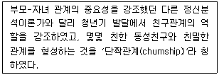
- 설리반(H. S. Sullivan)
- 브레이너드(C. Brainerd)
- 브론펜브레너(U. Bronfenbrenner)
- 호나이(K. Horney)
- 에릭슨(E. Erikson)
(정답률: 72%)
21. 콜버그(L. Kohlberg)의 도덕성 발달이론에 관한 설명으로 옳은 것은?
- 도덕적 판단보다는 행동을 중요시 한다.
- 도덕성의 사고구조보다는 내용을 더 중요시 한다.
- 도덕성 발달은 인지발달과 관련이 없다.
- 도덕성의 발달을 2수준 6단계로 제시한다.
- 최종단계는 보편적 원리(universal principle) 지향이다.
(정답률: 56%)
22. 다음에서 설명하는 것은?
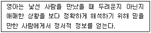
- 정서 최적화
- 정서적 참조
- 사회적 비교
- 사회적 참조
- 자기의식적 정서
(정답률: 56%)
23. 청소년기의 특징으로 옳은 것은?
- 형식적 사고가 구체적 사고로 전환된다.
- 전두엽에서 사용되지 않는 시냅스가 계속 제거된다.
- 대근육과 소근육이 급격히 발달한다.
- 뇌의 성장급등에 따라 뇌의 무게도 급격히 증가한다.
- 생산성을 획득하지 못하면 침체감을 경험한다.
(정답률: 63%)
24. 정신질환의 진단 및 통계 편람(DSM-5)에서 제시한 자폐스펙트럼장애의 증상이 아닌 것은?
- 동일성에 대한 고집
- 제한된 관심사
- 낮은 지능
- 상동증적 동작
- 감각정보에 대한 과잉 또는 과소반응
(정답률: 65%)
25. 정신질환의 진단 및 통계 편람(DSM-5)의 신경발달장애에서 운동장애에 해당하지 않는 것은?
- 발달성 협응장애
- 틱장애
- 상동증적 운동장애
- 뚜렛장애
- 신체이형장애
(정답률: 72%)
2과목: 집단상담의 기초
26. 개인상담보다는 집단상담에 가장 적합한 청소년은?
- 대인관계에 관심이 많은 청소년
- 의심이 심한 청소년
- 극도로 의존적인 청소년
- 반사회적인 청소년
- 주의산만하고 충동적인 청소년
(정답률: 76%)
27. 집단상담 회기별 계획에 관한 설명으로 옳지 않은 것은?
- 회기를 계획할 때 초반, 중반, 후반의 회기들 간의 차이를 염두에 둘 필요가 없다.
- 집단과 각 구성원의 특성을 이해하고 에너지 수준을 고려하여 회기별 활동을 계획한다.
- 집단상담과정 중에 참여를 하지 않거나 지각 혹은 탈락한 집단원을 위한 계획도 수립한다.
- 한 회기동안 적절한 활동을 계획하여 집단원들이 충분히 생각할 시간을 주어야 한다.
- 초반 회기에는 효율적인 집단 분위기를 형성하는데 도움이 되는 계획을 세울 필요가 있다.
(정답률: 62%)
28. 집단상담자가 지켜야 할 윤리와 규범에 관한 것으로 옳은 것을 모두 고른 것은?
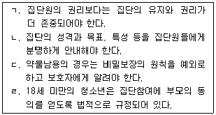
- ㄱ, ㄴ
- ㄱ, ㄹ
- ㄴ, ㄷ
- ㄴ, ㄷ, ㄹ
- ㄱ, ㄴ, ㄷ, ㄹ
(정답률: 44%)
29. 집단상담의 이점으로 옳은 것을 모두 고른 것은?
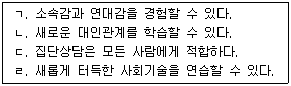
- ㄱ, ㄴ
- ㄷ, ㄹ
- ㄱ, ㄴ, ㄹ
- ㄴ, ㄷ, ㄹ
- ㄱ, ㄴ, ㄷ, ㄹ
(정답률: 70%)
30. 사실적인 이야기를 늘어놓으며 집단을 지루하게 하는 집단원에 대한 집단상담자의 자세로 옳지 않은 것은?
- 지루함에 대해 호기심을 갖는다.
- 지루함도 하나의 중요한 정보로 여긴다.
- 집단상담자의 역전이에 대해 주의를 기울인다.
- 언제, 어떤 경우에 덜 지루하게 하는지에 대해 파악한다.
- 의존성이 원인이므로 먼저 의존성에 대해 직면시킨다.
(정답률: 65%)
31. 다음에서 설명하는 집단상담자의 역할은 어떤 이론에 근거한 것인가?
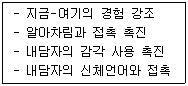
- 게슈탈트
- 해결중심
- 현실치료
- 행동수정
- 실존주의
(정답률: 63%)
32. 차단하기 기법이 필요한 상황에 해당되는 것을 모두 고른 것은?
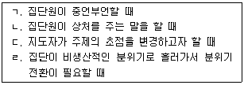
- ㄱ, ㄴ
- ㄷ, ㄹ
- ㄱ, ㄴ, ㄷ
- ㄴ, ㄷ, ㄹ
- ㄱ, ㄴ, ㄷ, ㄹ
(정답률: 68%)
33. 생산적인 지지와 격려에 해당하는 것은?
- 차선을 우선적으로 결정하려할 때 지지와 격려하기
- 침묵하던 집단원이 조심스럽게 자기개방을 했을 때 지지와 격려하기
- 집단원에 대해 매번 지지와 격려하기
- 집단원이 자신의 나약함을 집단에서 확인하려할 때 지지와 격려하기
- 집단원이 고통스러운 감정을 충분히 경험하기 전에 지지와 격려하기
(정답률: 72%)
34. 심리극에 근거한 집단상담에 관한 설명으로 옳은 것은?
- 집단 간의 관계에 초점을 맞춘다.
- 다섯 가지 주요 구성요소는 주인공, 연출자, 보조자아, 각본, 무대이다.
- 주요 개념으로 현재성, 창조성, 자발성, 역할과 역할연기, 텔레와 참만남 등이 있다.
- 진행단계는 워밍업단계, 준비단계, 실연단계, 종결단계이다.
- 언어를 주요 기반으로 한 실연을 통해 문제해결을 꾀한다.
(정답률: 36%)
35. 정신분석 집단상담에서 '놀림을 받는 집단원 A는 인기가 많은 집단원 B에 대해 불편한 마음을 가지고 있다.' 이때 집단원 A가 드러내는 행동의 방어기제로 옳은 것은?
- 반동형성: 자신이 B를 불편해하는 줄도 모른다.
- 억압: 자신은 B를 싫어하지 않는데 B가 자신을 싫어한다고 한다.
- 퇴행: B에게 부정적인 감정을 숨기기 위해 더 잘해준다.
- 합리화: B가 잘난 체 해서 B를 싫어한다고 말한다.
- 전치: B에게 말할 때 어린아이같이 말하거나 행동한다.
(정답률: 66%)
36. 다음은 집단상담 축어록의 일부이다. (ㄱ) ~(ㄹ)에 해당되는 것을 순서대로 옳게 연결한 것은?
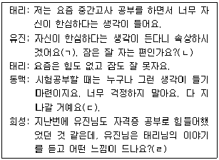
- (ㄱ)공감하기, (ㄴ)폐쇄적 질문, (ㄷ)공감하기, (ㄹ)차단하기
- (ㄱ)공감하기, (ㄴ)폐쇄적 질문, (ㄷ)구원하기, (ㄹ)연결하기
- (ㄱ)자기개방, (ㄴ)개방적 질문, (ㄷ)공감하기, (ㄹ)연결하기
- (ㄱ)공감하기, (ㄴ)개방적 질문, (ㄷ)구원하기, (ㄹ)연결하기
- (ㄱ)자기개방, (ㄴ)폐쇄적 질문, (ㄷ)공감하기, (ㄹ)차단하기
(정답률: 65%)
37. 현실치료 집단상담의 주요기법이 아닌 것은?
- 질문하기
- 유머사용
- 역설적 기법
- 탈숙고(dereflection)
- 직면하기
(정답률: 46%)
38. 교류분석(TA) 집단상담에서 다루는 내용이 아닌 것은?
- 각본분석
- 구조분석
- 동기분석
- 게임분석
- 라켓분석
(정답률: 52%)
39. 아들러(A. Adler) 집단상담에서 분석과 통찰단계의 활동으로 옳지 않은 것은?
- 집단원의 초기 기억을 탐색한다.
- 가족구도에서 차지하는 심리적 위치를 파악한다.
- 일과 사회적 상황에서 어떻게 기능하고 있는가를 조사한다.
- 생활양식에 대한 이해를 바탕으로 대안적인 행동을 하도록 격려한다.
- 지금-여기에서 행동하는 방식의 이면에 숨겨진 동기를 다룬다.
(정답률: 25%)
40. 집단원의 침묵과 참여 부족의 이유에 해당하는 것을 모두 고른 것은?
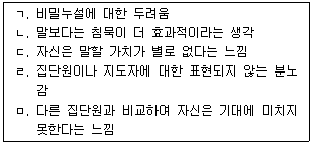
- ㄱ, ㄴ, ㅁ
- ㄷ, ㄹ, ㅁ
- ㄱ, ㄴ, ㄷ, ㄹ
- ㄴ, ㄷ, ㄹ, ㅁ
- ㄱ, ㄴ, ㄷ, ㄹ, ㅁ
(정답률: 74%)
41. 코리(G. Corey)의 집단발달 단계 중 과도기(transition)의 특징으로 옳지 않은 것은?
- 불안이 증가한다.
- 하위 집단을 이루며 서로 분리된다.
- 변화를 도모하고 과감하게 시도한다.
- 집단원 자신을 속으로 숨기거나 간접적으로 표현한다.
- 다른 사람들에게 조언을 하는데 많은 에너지를 쏟는다.
(정답률: 43%)
42. 집단원이 경험한 치료적 요인은?
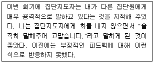
- 대인간 행동학습
- 정화
- 자기노출
- 자기이해
- 지도
(정답률: 42%)
43. 집단응집력에 관한 설명으로 옳지 않은 것은?
- 집단원들이 집단에 남아 있도록 하는 힘이다.
- 자신의 내면세계를 타인과 공유하고 수용 받는다.
- 응집력 자체로는 치료적 요인이 될 수 없다.
- 지금-여기에 상호 피드백의 활성화는 응집력의 지표이다.
- 더 높은 출석율과 더 많은 참여를 이끌어 낸다.
(정답률: 71%)
44. 집단발달단계의 특징을 발달단계 순서대로 옳게 나열한 것은?
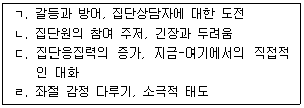
- ㄱ - ㄴ - ㄷ – ㄹ
- ㄱ - ㄷ - ㄹ – ㄴ
- ㄴ - ㄱ - ㄷ - ㄹ
- ㄴ - ㄱ - ㄹ – ㄷ
- ㄹ - ㄴ - ㄱ - ㄷ
(정답률: 46%)
45. 집단상담 제안서를 작성할 때 포함될 내용이 아닌 것은?
- 집단의 규범
- 집단에 대한 평가방법
- 대상, 모임시간, 전체의 길이
- 집단에서 달성하고자 하는 목표
- 집단에 대한 명확하고 설득력 있는 근거
(정답률: 34%)
46. 개인상담과 비교했을 때 집단상담의 단점을 모두 고른 것은?
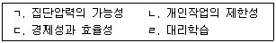
- ㄱ, ㄴ
- ㄱ, ㄷ
- ㄱ, ㄹ
- ㄴ, ㄷ
- ㄷ, ㄹ
(정답률: 72%)
47. 집단상담 초기에 비협조적인 학생의 저항에 대처하는 적절한 반응을 모두 고른 것은?
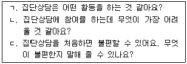
- ㄱ
- ㄴ
- ㄱ, ㄴ
- ㄴ, ㄷ
- ㄱ, ㄴ, ㄷ
(정답률: 67%)
48. 다음은 어떤 집단의 유형에 해당하는가?
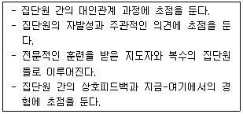
- 위기집단
- 자조집단
- 교육집단
- 상담집단
- 과제해결집단
(정답률: 56%)
49. 생산적인 집단을 운영하는데 방해가 되는 집단원의 진술에 해당하는 것은?
- “다른 친구들이 슬픈 표정을 짓는 것을 보면 저도 왠지 슬퍼요.”
- “저는 정말로 아무런 문제가 없어요. 다 괜찮아요.”
- “다른 친구들이 기뻐하는 것을 보면 부럽기도 하고 저도 그렇게 하고 싶어져요.”
- “저만 이런 고민이 있는 것이 아니라서 다행이에요.”
- “저도 저 친구처럼 처음 보는 사람에게 말을 걸어보고 싶어요.”
(정답률: 76%)
50. 청소년 집단상담자의 기술과 그 예로 옳지 않은 것은?
- 직면- “채송이가 진구에 대하여 지금 말한 내용이 지난번에 했던 것과 다른 것 같은데”
- 해석- “채송이가 진구의 잘못에 대하여 이야기를 할 때 불편해 하는 것은 중학교 1학년 때 따돌림 받았던 경험이 떠올라서 그럴 수 있을 것 같습니다.”
- 명료화- “불편하다는 것이 무엇을 말하는지 다른 친구들에게 더 이야기해 주면 도움이 될 것 같아요.”
- 연결짓기- “채송이도 진구처럼 친구들에게 놀림당한다고 한 것 같은데 채송이의 이야기를 들어볼까요?”
- 재진술- “옆에 있는 친구가 자기 이야기를 잘 들어줘서 기분이 좋았겠어요.”
(정답률: 55%)
3과목: 심리측정 및 평가
51. 다음 설명으로 옳은 것은?
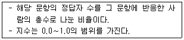
- 문항추측도
- Lamda
- Z score
- 평균비
- 문항난이도
(정답률: 59%)
52. 문항반응이론에 관한 설명으로 옳은 것은?
- 반복측정을 가정한다.
- 문항특성곡선으로 문항을 분석한다.
- 수검자에 따른 측정오차는 동일하다고 가정한다.
- 문항특성은 수검자의 특성에 영향을 받는다고 가정한다.
- 문항모수치의 변화가능성을 가정한다.
(정답률: 39%)
53. 등간척도에 해당하는 것은?
- 온도
- 몸무게
- 성적순위
- 길이
- 수험번호
(정답률: 64%)
54. 타당도에 관한 설명으로 옳지 않은 것은?
- 타당도는 검사가 측정하고자 하는 것을 실제로 측정한 정도이다.
- 공인타당도에서는 새로 개발한 검사의 점수와 준거검사의 점수를 동일한 시점에서 수집한다.
- 예언타당도는 준거타당도에 속한다.
- 안면타당도는 다른 점수와의 관계를 분석하여 추정한다.
- 요인분석으로 구성타당도를 추정할 수 있다.
(정답률: 49%)
55. 규준에 관한 설명으로 옳은 것은?
- 하나의 규준은 다양한 분포로 이루어진다.
- 규준은 규준집단의 점수 분포를 반영한다.
- Z점수의 평균은 10이고 분산은 5이다.
- T점수의 평균은 50이고 표준편차는 15이다.
- 스테나인(stanine)의 점수범위는 10~90이다.
(정답률: 50%)
56. 심리검사에 관한 설명으로 옳지 않은 것은?
- 행동표본을 측정할 수 있다.
- 개인 간 비교가 가능하다.
- 개인의 행동을 예측할 수 있다.
- 심리적 속성을 직접적으로 측정한다.
- 심리평가의 근거자료 중 하나이다.
(정답률: 63%)
57. 내적합치도를 확인할 수 있는 신뢰도 계수로만 나열한 것은?(문제 오류로 확정답안 발표시 3, 4, 5번이 정답처리 되었습니다. 여기서는 3번을 누르시면 정답 처리 됩니다.)
- Phi 계수, Delta 계수
- Omega 계수, Phi 계수
- 반분신뢰도 계수, Cronbach α 계수
- 반분신뢰도 계수, Kuder-Richardson 계수
- Kuder-Richardson 계수, Cronbach α 계수
(정답률: 63%)
58. 신뢰도에 관한 설명으로 옳지 않은 것은?
- 동형신뢰도는 전체 문항을 짝수항과 홀수항으로 나누어서 측정한다.
- 검사-재검사 신뢰도는 검사와 재검사 간 시간 간격의 영향을 받는다.
- 신뢰도는 측정의 안정성을 나타낸다.
- 반분신뢰도는 검사-재검사 신뢰도보다 비용 측면에서 장점이 있다.
- 평정자간 신뢰도는 두 명 이상의 평가자가 필요하다.
(정답률: 62%)
59. 만15세 수검자에게 실시 가능한 성격검사는?
- K-WPPSI
- Rey-Kim Test
- MMPI-A
- K-DRS-2
- SNSB
(정답률: 60%)
60. K-WISC-Ⅳ의 작업기억지표(WMI)를 측정하는 소검사는?
- 행렬추리
- 기호쓰기
- 동형찾기
- 단어추리
- 순차연결
(정답률: 33%)
61. 심리검사 및 평가의 윤리에 관한 내용으로 옳지 않은 것은?
- 검사동의를 구할 때에는 비밀유지의 한계에 대해 알려야 한다.
- 자격을 갖춘 사람이 심리검사를 실시해야 한다.
- 평가서를 보여주면 안되는 경우에는 사전에 수검자에게 이 사실을 알려야 한다.
- 동의할 능력이 없는 사람에게도 평가의 본질과 목적을 알려야 한다.
- 자동화된 서비스를 사용할 경우 검사자는 평가의 해석에 대한 책임을 지지 않는다.
(정답률: 72%)
62. K-WAIS-Ⅳ에 관한 설명으로 옳은 것을 모두 고른 것은?
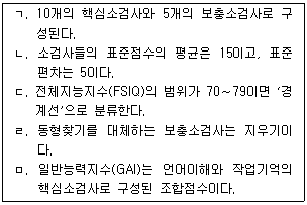
- ㄱ, ㄴ, ㄷ
- ㄱ, ㄷ, ㄹ
- ㄴ, ㄷ, ㅁ
- ㄴ, ㄹ, ㅁ
- ㄱ, ㄷ, ㄹ, ㅁ
(정답률: 39%)
63. 지능을 일반요인 g(general factor)와 특수요인 s(special factor)로 구분한 학자는?
- 스피어만(C. Spearman)
- 써스톤(L. Thurstone)
- 쏜다이크(E. Thorndike)
- 케텔(R. Cattell)
- 길포드(J. Guilford)
(정답률: 61%)
64. 정신상태평가(mental status examination)의 주요 항목에 해당하지 않는 것은?
- 기억
- 외모와 행동
- 감정과 정서
- 면담자에 대한 태도
- 가족력
(정답률: 43%)
65. K-WISC-Ⅳ 실시에 관한 설명으로 옳은 것을 모두 고른 것은?
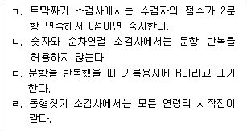
- ㄱ, ㄴ
- ㄱ, ㄹ
- ㄴ, ㄷ
- ㄴ, ㄹ
- ㄱ, ㄷ, ㄹ
(정답률: 43%)
66. 심리검사의 실시에 관한 설명으로 옳은 것은?
- 지능검사의 경우 추가 질문을 해서는 안 된다.
- 검사 장소는 소음이 많은 곳으로 선정한다.
- 검사 장소는 조명이 어두운 곳으로 선정한다.
- 표준화된 검사의 경우 표준화된 절차에 따른다.
- 지능검사의 경우 수검자의 반응은 핵심단어를 중심으로 축약해서 기록한다.
(정답률: 73%)
67. 삭스(J. Sacks)의 문장완성검사(SSCT)에서 자기개념 영역에 포함되지 않는 태도는?
- 죄의식(죄책감)
- 이성관계
- 목표
- 두려움
- 자신의 능력
(정답률: 49%)
68. 투사적 검사에 관한 설명으로 옳은 것은?
- 벤더게슈탈트검사(BGT)에서 성인이 그린 도형A의 정상적인 위치는 용지의 정 중앙이다.
- 주제통각검사(TAT) 카드는 성인 남성과 성인 여성으로만 구별된다.
- 동작성 가족화 검사(KFD)는 가족의 정서적인 관계를 살펴보는 데 유용하다.
- 아동용 주제통각검사(CAT)의 카드 수는 주제통각검사(TAT)와 동일하다.
- 벤더게슈탈트검사(BGT)는 8세 이하의 아동에게는 실시할 수 없다.
(정답률: 48%)
69. 엑스너(J. Exner)의 종합체계의 결정인에 관한 설명으로 옳지 않은 것은?
- 반점의 크기에 기초해서 거리감을 지각한 경우에는 Y로 채점한다.
- 형태를 사용한 경우에는 F로 채점한다.
- 동물이 인간의 동작을 취하고 있는 경우에는 M으로 채점한다.
- 유채색 결정인에는 C, CF, FC, Cn이 있다.
- 쌍반응은 (2)로 채점한다.
(정답률: 38%)
70. 집-나무-사람(HTP) 검사에 관한 설명으로 옳은 것은?
- 머레이(H. Murray)가 개발하였다.
- 집, 나무, 사람의 순서대로 그리도록 한다.
- 모든 용지를 가로로 제시하여 수검자가 원하는 대로 사용하게 한다.
- 문맹자에게는 실시할 수 없다.
- 각 그림마다 시간제한을 두어야 한다.
(정답률: 69%)
71. MMPI-2의 척도에 관한 설명으로 옳은 것은?
- 재구성 임상척도는 모두 9개이다.
- TRIN척도는 내용이 유사하거나 상반되는 문항 쌍으로 구성된다.
- K척도는 긍정왜곡 경향성을 탐지하는 보충척도이다.
- DEP는 우울 증상을 측정하는 임상척도이다.
- AGGR은 공격적인 성향을 측정하는 내용척도이다.
(정답률: 24%)
72. 홀랜드(J. Holland)의 진로탐색검사의 직업적 성격유형을 모두 고른 것은?
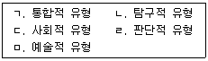
- ㄱ, ㄴ
- ㄷ, ㄹ
- ㄴ, ㄷ, ㄹ
- ㄴ, ㄷ, ㅁ
- ㄱ, ㄷ, ㄹ, ㅁ
(정답률: 69%)
73. 다음에 해당하는 MBTI의 지표는?
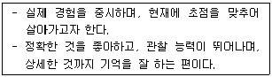
- 내향성(Introversion)
- 감각(Sensing)
- 사고(Thinking)
- 현실(Reality)
- 감정(Feeling)
(정답률: 41%)
74. 성격평가질문지(PAI)의 임상척도와 그 측정 내용이 옳지 않은 것은?
- ANT: 반사회적 성격장애의 특징과 불법적 행위에 관여한 경험
- ARD: 불안장애와 관련된 구체적인 임상 증상이나 행동
- ALC: 알코올 남용 및 의존과 관련된 행동
- BOR: 원한과 앙심, 의심과 불신, 지나친 경계 행동
- DRG: 약물 사용에 따른 문제와 약물의존적 행동
(정답률: 49%)
75. 다음 사례에서 A양에게 MMPI-2를 실시했을 때 예상되는 결과가 아닌 것은?
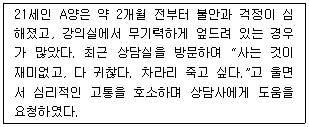
- 척도 2의 상승
- F척도의 상승
- S척도의 상승
- ANX 척도의 상승
- 척도 9의 하락
(정답률: 44%)
4과목: 상담이론
76. 상담에 관한 설명으로 옳은 것을 모두 고른 것은?
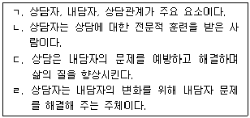
- ㄱ, ㄹ
- ㄴ, ㄷ
- ㄱ, ㄴ, ㄷ
- ㄴ, ㄷ, ㄹ
- ㄱ, ㄴ, ㄷ, ㄹ
(정답률: 66%)
77. 상담에서 윤리적 의사결정을 할 때 필요한 기본적인 윤리적 원칙을 순서대로 옳게 나열한 것은?
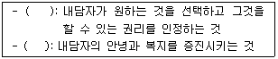
- 공정성(justice), 선의(beneficence)
- 자율성(autonomy), 공정성(justice)
- 선의(beneficence), 진실성(veracity)
- 진실성(veracity), 자율성(autonomy)
- 자율성(autonomy), 선의(beneficence)
(정답률: 66%)
78. 상담자가 기본적으로 갖추어야 하는 자질이 아닌 것은?
- 유머
- 개방성
- 유연성
- 유창성
- 문화적 차이에 대한 민감성
(정답률: 61%)
79. 상담자의 윤리적 행동으로 옳은 것을 모두 고른 것은?
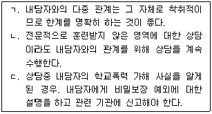
- ㄱ
- ㄷ
- ㄱ, ㄷ
- ㄴ, ㄷ
- ㄱ, ㄴ, ㄷ
(정답률: 29%)
80. 정신분석에 관한 설명으로 옳지 않은 것은?
- 도덕적 불안은 초자아와 자아 사이의 갈등에서 발생한다.
- 수면 중에는 자아의 방어가 없기 때문에 잠재몽은 왜곡되지 않는다.
- 원초아는 쾌락원리에 따라 작동하고 일차과정 사고를 한다.
- 정신분석에서 치료자의 주된 과제 중 하나는 전이를 유도하고 해석하는 것이다.
- 자유연상은 내담자의 마음에 떠오르는 모든 내용을 검열하지 않고 표현하게 하는 것이다.
(정답률: 58%)
81. 아들러(A. Adler) 개인심리학에 관한 설명으로 옳지 않은 것은?
- 범인류적 유대감(공동체감)을 중시한다.
- 인간을 전체적 존재로 본다.
- 증상의 원인을 찾는데 초점을 둔다.
- 사회 및 교육 문제에 관심을 갖는다.
- 역경을 이겨 내는 능력을 발달시키기 위해 격려를 사용한다.
(정답률: 55%)
82. 다음 사례에서 초등학생 민수에게 사용된 행동주의 상담기법은?
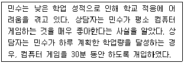
- 자기교수훈련, 정적강화
- 프리맥의 원리, 정적강화
- 체계적 둔감법, 자기교수훈련
- 자극통제, 부적강화
- 프리맥의 원리, 부적강화
(정답률: 66%)
83. 방어기제와 그 예로 옳은 것은?
- 주지화: 사랑하는 사람을 사고로 잃은 사람이 그 죽음을 인정하지 않는다.
- 투사: 아내를 미워하는 남편이 아내가 자신을 미워한다고 인식한다.
- 합리화: 직장상사에게 야단을 맞은 사람이 상사에게 대들지 못하고 부하 직원에게 짜증을 낸다.
- 승화: 실연을 당한 남자가 여성의 심리에 대한 지적인 분석을 하며 자신의 고통을 회피한다.
- 반동형성: 대소변을 잘 가리던 아이가 동생이 태어난 이후 대소변을 가리지 못하게 된다.
(정답률: 58%)
84. 실존주의 상담의 인간관에 관한 설명으로 옳은 것을 모두 고른 것은?
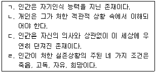
- ㄱ, ㄷ
- ㄴ, ㄹ
- ㄱ, ㄴ, ㄷ
- ㄴ, ㄷ, ㄹ
- ㄱ, ㄴ, ㄷ, ㄹ
(정답률: 32%)
85. 인간중심 상담에 관한 설명으로 옳은 것을 모두 고른 것은?
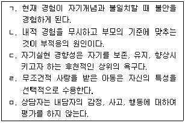
- ㄱ, ㄴ
- ㄷ, ㄹ
- ㄱ, ㄴ, ㅁ
- ㄷ, ㄹ, ㅁ
- ㄱ, ㄴ, ㄷ, ㅁ
(정답률: 41%)
86. 다음 사례에서 게슈탈트 이론의 접촉경계 혼란 현상은?
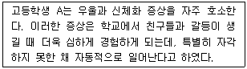
- 반전
- 투사
- 편향
- 융합
- 내사
(정답률: 22%)
87. 다음 사례에서 합리정서행동상담(REBT)의 ABCDE 절차와 내용의 연결이 옳지 않은 것은?
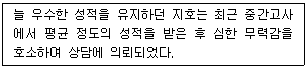
- A - “중간고사에서 평균 점수를 받았어요.”
- B - “평균이라니! 저는 정말 바보 멍청이에요.”
- C - “학교 다니기 싫어요. 전 망했어요.”
- D - “중간고사에서 원하는 성적을 받지 못했다니 정말 속상하겠구나.”
- E - “한 번 시험을 망쳤다고 내가 바보라는 뜻은 아니죠. 이번 시험을 못 본 이유를 잘 살펴보고 다시 노력해 보겠어요.”
(정답률: 66%)
88. 벡(A. Beck)의 인지치료에 관한 설명으로 옳은 것을 모두 고른 것은?
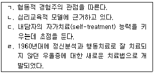
- ㄱ, ㄹ
- ㄴ, ㄷ
- ㄱ, ㄴ, ㄷ
- ㄴ, ㄷ, ㄹ
- ㄱ, ㄴ, ㄷ, ㄹ
(정답률: 38%)
89. 게슈탈트 상담의 치료 기법에 관한 설명으로 옳지 않은 것은?
- 내담자의 꿈에 대해 의미를 해석하고 지적 통찰에 이르도록 돕는다.
- 자신의 진정한 감정을 회피하는 내담자에게 진실을 그대로 받아들이도록 직면 기법을 사용한다.
- 빈의자 기법은 내사된 가치관을 의식화함으로써 부인하고 있을지 모르는 자신의 어떤 측면에 접촉하도록 도와준다.
- 거부하고 부인했던 자신의 성격의 측면들을 통합하고 수용하기 위해 내적 대화 기법을 사용한다.
- 인격 기능의 두 측면인 상전과 하인의 갈등과 대립을 다룸으로써 통합에 이르게 한다.
(정답률: 37%)
90. 현실치료에 관한 설명으로 옳지 않은 것은?
- 내담자는 자신의 행동에 대해 선택권이 있다.
- 인간은 즐거움, 자유, 실현, 소속, 힘의 욕구를 가지고 태어난다.
- 전행동은 행동하기, 생각하기, 느끼기, 생리적 반응으로 구성되어 있다.
- 행동은 자신의 욕구를 충족시키기 위한 노력이다.
- 계획은 간단하고, 실현가능하고, 즉각적이어야 한다.
(정답률: 44%)
91. 교류분석상담에 관한 설명으로 옳은 것은?
- 세 자아 상태 중 두 자아만 자극과 반응을 주고받는 것이 건강한 상태이다.
- 교류분석을 통해 부적절한 교차적 교류나 이면적 교류를 중단하도록 촉진한다.
- 게임은 긍정적 스트로크를 주고받게 한다.
- 각본은 최근 개인이 경험한 사건에 따라 결정된다.
- 내담자의 삶의 입장을 자기긍정-타인부정의 입장으로 변화시킨다.
(정답률: 60%)
92. 합리정서행동상담(REBT)에 관한 설명으로 옳은 것은?
- 동물실험에서 얻은 결과를 인간에게 적용하였다.
- 인간은 가상적인 최종목표를 추구하는 존재로 보았다.
- 인간은 선천적으로 합리적이면서도 비합리적이라고 보았다.
- 우울한 사람들이 부정적인 생각을 갖는 세 가지 주제, 인지삼제를 개념화하였다.
- 다양한 정신장애의 원인을 실존적 불안을 다루는 방식에서 찾았다.
(정답률: 56%)
93. 여성주의 상담에 관한 설명으로 옳은 것을 모두 고른 것은?
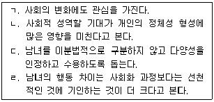
- ㄱ, ㄴ
- ㄷ, ㄹ
- ㄱ, ㄴ, ㄷ
- ㄴ, ㄷ, ㄹ
- ㄱ, ㄴ, ㄷ, ㄹ
(정답률: 66%)
94. 다음은 어떤 상담접근의 목표인가?
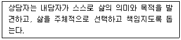
- 인간중심 상담
- 개인심리학적 접근
- 게슈탈트 상담
- 인지치료
- 실존주의 상담
(정답률: 52%)
95. 상담의 통합적 접근에 관한 설명으로 옳지 않은 것은?
- 여러 접근법에서 기법을 체계적으로 가져온 접근이다.
- 각 내담자의 독특한 욕구에 맞추기 위한 접근이다.
- 통합적 입장을 취하는 상담자가 과거에 비해 증가하는 추세이다.
- 치료과정이 고도로 조직화된 접근이다.
- 이론적 통합은 토대가 되는 치료이론들과 그 이론들의 기법을 통합하는 것이다.
(정답률: 40%)
96. 상담과정에 관한 설명으로 옳은 것은?
- 해석은 상담의 필수요소이다.
- 직면은 상담의 어느 시기라도 할 수 있다.
- 요약은 내담자의 산만한 생각과 감정을 정리해볼 기회를 갖게 한다.
- 저항은 상담과정에서 일어나지 않도록 해야 한다.
- 상담중 침묵에 대해서는 직접 다루지 않는 것이 좋다.
(정답률: 62%)
97. 다문화 상담 역량을 갖춘 상담자의 자질로 옳은 것을 모두 고른 것은?
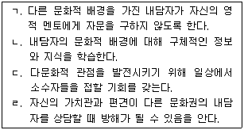
- ㄱ, ㄴ
- ㄴ, ㄷ
- ㄷ, ㄹ
- ㄴ, ㄷ, ㄹ
- ㄱ, ㄴ, ㄷ, ㄹ
(정답률: 63%)
98. 상담 과정 중 초기단계에 해당하는 것을 모두 고른 것은?
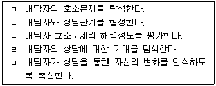
- ㄱ, ㅁ
- ㄱ, ㄴ, ㄹ
- ㄴ, ㄷ, ㄹ
- ㄱ, ㄴ, ㄷ, ㅁ
- ㄱ, ㄴ, ㄷ, ㄹ, ㅁ
(정답률: 68%)
99. 직면에 관한 설명으로 옳지 않은 것은?
- 신념과 행동의 불일치를 깨닫게 해준다.
- 자신의 현실을 되돌아보게 한다.
- 모순되는 행동을 직시하여 새로운 조망을 갖도록 돕는다.
- 내담자의 건설적인 변화를 위해 새로운 내ㆍ외적 행동의 발달을 촉진한다.
- 내담자의 행동들 간의 관계, 행동의 의미, 동기에 대해 설명해 준다.
(정답률: 46%)
100. 상담이론과 기법이 옳게 짝지어진 것은?
- 개인심리학 – 혐오기법
- 인지치료 - 역기능적 신념 수정
- 정신분석 - 빈의자 기법
- 게슈탈트 상담 - 자유연상
- 해결중심 상담 - 자동적 사고 수정
(정답률: 59%)